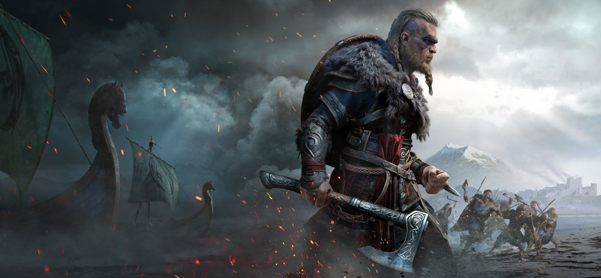

|  | Empresa: Ubsoft Gênero: Ação |
Os vikings e a mitologia nórdica tardaram a desembarcar em Assassin’s Creed, mas a aurora boreal da Noruega e toda a sequência inicial de Assassin’s Creed Valhalla já são suficientes para nos alertar que a espera será compensada para quem jogar o massivo e brutal novo jogo da Ubisoft, disponível para PC, PlayStation 4, PlayStation 5, Xbox One, Xbox Series X e Series S, com edições que variam entre R$ 199,99 e R$ 499,90. Origins trouxe a muito bem-vinda renovação nas mecânicas de gameplay que a franquia precisava, enquanto Odyssey abraçou o RPG em mundo aberto de vez. O recém-chegado Valhalla veio para engrandecer ainda mais o molde e trazer pontuais novidades, mas pode ter perdido um pouco a mão na proporção.Em Assassin’s Creed: Odyssey, o jogador podia escolher se queria jogar com Kassandra ou Alexios; em Valhalla, Eivor Marca-de-lobo pode ser tanto homem quanto mulher, ficando a critério do jogador. Existe ainda a possibilidade de deixar que o Animus escolha, e foi justamente o que eu fiz: os deuses antigos e novos disseram que eu deveria jogar com Eivor mulher -- no fundo, era essa minha vontade, e me senti burlando o chapéu seletor de Harry Potter. Seja como for, ambos são uma versão do mesmo personagem, sem interferência na narrativa, e é possível mudar o sexo do protagonista a qualquer momento. Eivor leva consigo o trauma de perder os pais na infância, em uma invasão que lhe rendeu a cicatriz no rosto. Junto com Sigurd, seu meio-irmão, a viking (ou o viking) deixam a Noruega, terra natal dos dois, para uma nova aventura e formação de alianças na Inglaterra. O objetivo final de um bom viking é entrar em Valhalla, que na crença nórdica, é o pomposo salão em Asgard que aguarda pelos guerreiros mortos dignamente em combate. Daí, o nome do jogo. 0 visualizações há 01 dia |